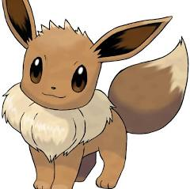

Eevee is a small quadrupedal, mammalian creature with fluffy brown fur, that bears feliform and lagomorph traits. Its muzzle is very cat-like, with a small, black and triangular nose. It has a fluffy, cream-colored ruff around its neck and a short, brown, bushy tail with a cream-colored tip. Eevee has round, brown eyes, long rabbit-like ears, and pink paw pads on its feet. Its paws are small with three toes and no visible claws. A Shiny Eevee has silver fur instead of brown, and its ruff and tail-tip are white instead of cream. Its eyes are also gray instead of brown. Eevee is said to have an irregularly-shaped genetic structure, enabling it to evolve into multiple different forms, which depends if it touches a stone or its relationship to their Trainer.